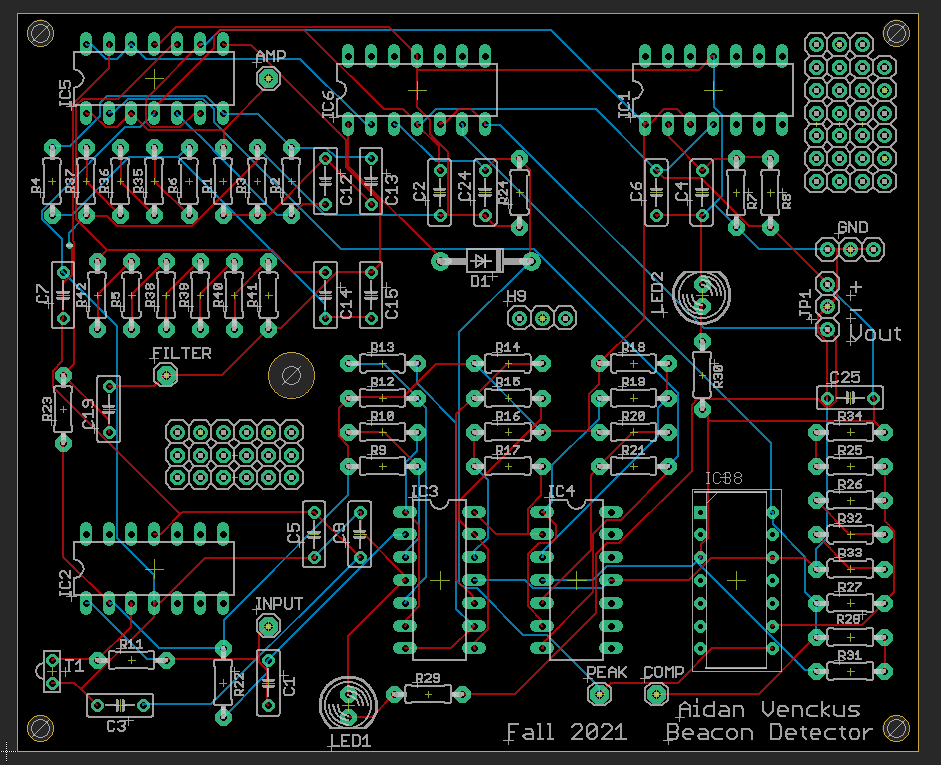

Here you will find PCBs I have designed using Eagle or KiKad.
Beacon Detector:
Beacon Schematic:

Beacon PCB:
This was a breadboard and perfboard circuit that I had to design as part of my capstone to be able to
detect IR light from a distance away, I decided that it would be good practice and fun to try to design it
into a pcb board using eagle.
Beacon Detector Stages:
Input Stage
- Starts with a Photoresistive Transistor which gives a voltage based on IR light levels and flows through a Transresistive op-amp
Amplification Stage
- Takes the Input and Amplifies the signal with 6 (11x gain) non-inverting op-amps
Filtering Stage
- With this amplified signal we filter out anything but the 2khz filter with a 2 stage 4th order butterworth bandpass
Peak Detection Stage
- The newly filtered signal goes to a peak detector to make sure we have high wave outputs
Comparator and hysterisis Stage
- The comparator takes the signal and turns it into a digital signal (1 High or 0 Low) by the use of voltage thresholds and hysterisis
Output Stage
- The digital signal now gets passed to a buffer and LED to be able to show the resulting output
******** PCB:
******** Schematic:
******** PCB:
This is a secret project because I am giving it out as a gift near the holidays, it will be revealed later.